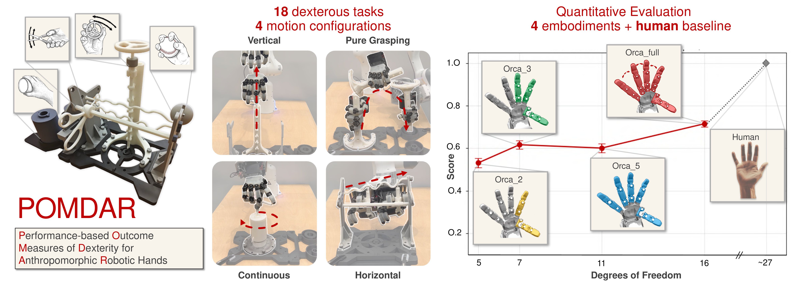
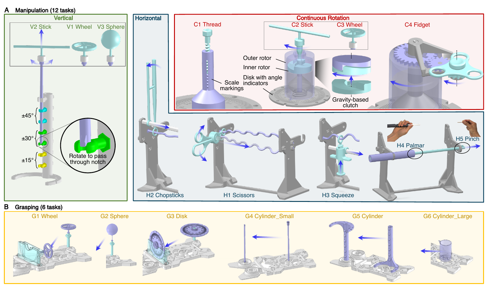
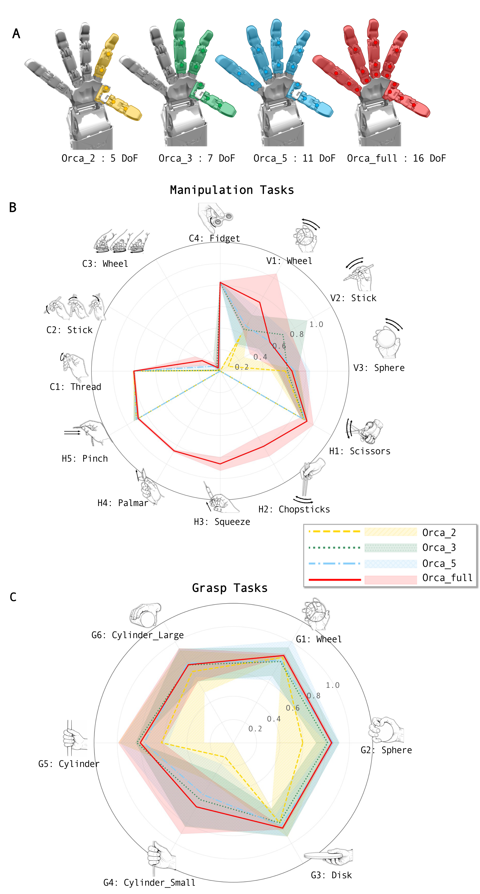
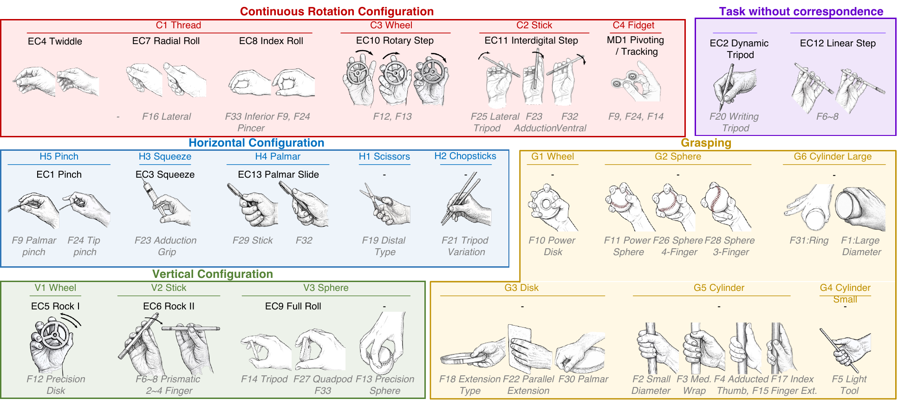

Vertical (V1–V3)
Wheel, stick, and sphere: progress through discrete notches while maintaining in-hand control.
*Equal contribution · Soft Robotics Lab, D-MAVT, ETH Zurich
POMDAR (Performance-based Outcome Measures of Dexterity for Anthropomorphic Robotic Hands) is a taxonomy-grounded dexterity benchmark for anthropomorphic hands. It formalizes dexterity as task throughput (correctness and speed) across vertical, horizontal, continuous-rotation, and pure-grasping configurations—implemented in the real world and in simulation.
Dexterity is central to anthropomorphic hands, but inconsistent definitions make comparisons across designs difficult. POMDAR is a benchmark that treats dexterity as task performance over manipulation and grasping motions grounded in established motor-control taxonomies. Mechanical scaffolding constrains motion, limits compensatory strategies, and yields unambiguous metrics. Scores combine task correctness and speed against a human baseline; the protocol is open and standardized for reproducible comparison of dexterous platforms.

Fig. 1 (teaser). Four manipulation configurations and embodiment study overview. Vector PDF
Anthropomorphic hands are judged by kinematic proxies as often as by real manipulation outcomes. POMDAR instead follows a performance-based paradigm: the benchmark tasks are traceable to manipulation and grasp taxonomies, and scores reflect what the hand actually achieves on contact-rich interactions—not only workspace or DoF counts.
Tasks consolidate overlapping taxonomy entries into a practical set: 12 manipulation patterns (vertical, horizontal, and continuous rotation) and 6 pure grasping tasks. Vertical and horizontal setups use scaffolded rails and notches; continuous tasks use a gravity-based clutch; grasping tasks isolate pick-up and relocation without external supports.
Wheel, stick, and sphere: progress through discrete notches while maintaining in-hand control.
Scissors, chopsticks, squeeze, palmar, pinch: translation along curved rails with increasing difficulty.
Thread, stick, wheel, fidget: sustained rotation using the clutch and geared mechanisms.
Wheel, sphere, disk, and three cylinder sizes—relocation in free space to test grasp quality.

Benchmark apparatus and task configurations (overview). Vector PDF
Explore MuJoCo models of the benchmark objects in your browser: orbit the camera, pause, and drag bodies to apply forces. The first load downloads the physics engine and meshes and may take a few seconds.
Real-world experiments teleoperate ORCA hand embodiments (2-, 3-, 5-finger without abduction, and full 16-DoF) on a Franka arm using Rokoko motion-capture gloves. Radar plots summarize per-task scores for each embodiment (manipulation and grasp panels). Click a task below to watch representative teleoperation clips.

Representative teleoperation and benchmark overview (video).
POMDAR tasks map to the families shown in the paper figures: C (continuous rotation: thread, stick, wheel, fidget), V (vertical scaffold: wheel, stick, sphere), H (horizontal scaffold: scissors, chopsticks, squeeze, palmar, pinch), and G (free grasping: wheel, sphere, disk, and three cylinder sizes). The results section compares ORCA embodiments on these taxonomy cells.

Taxonomy layout. Vector PDF
@article{liconti2026pomdar,
title={A Benchmark of Dexterity for Anthropomorphic Robotic Hands},
author={Liconti, Davide and Zhou, Yuning and Toshimitsu, Yasunori and Hinchet, Ronan and Katzschmann, Robert K.},
journal={arXiv preprint arXiv:2604.09294},
year={2026}
}
Replace the BibTeX entry with the final venue information when available.